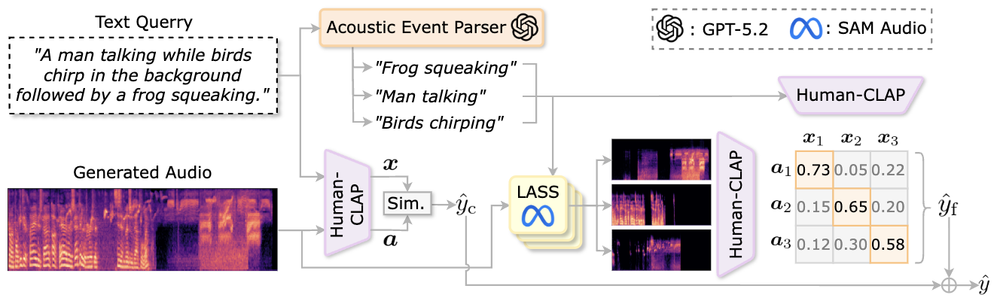
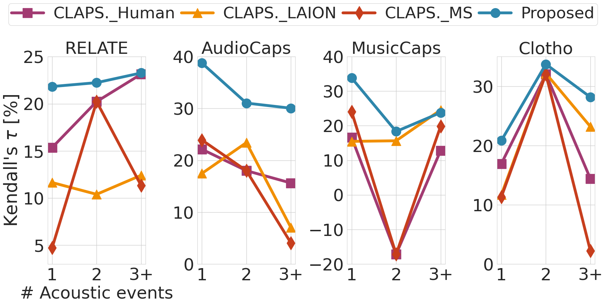
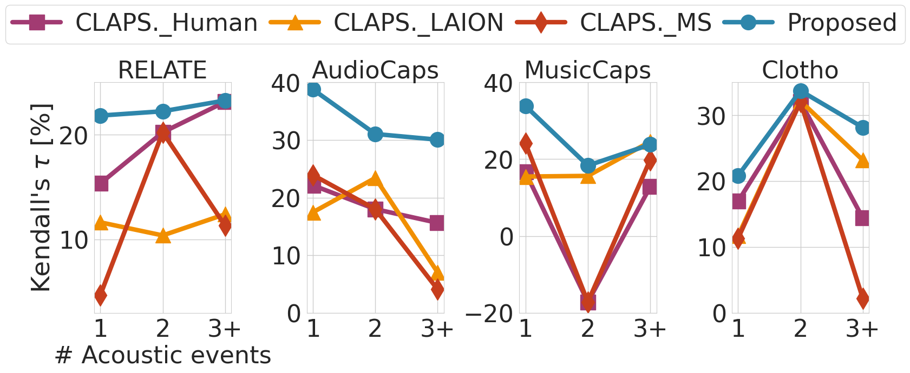

Abstract
Text-to-Audio (TTA) generation has seen significant progress, but evaluating these systems remains challenging. Existing reference-free metrics often focus on global semantic alignment, neglecting fine-grained acoustic events. In this paper, we introduce ELSA (Event-Wise Semantic Alignment), a novel metric designed to evaluate TTA models by aligning acoustic events with their corresponding textual descriptions. Our experiments demonstrate that ELSA correlates better with human judgment compared to state-of-the-art baselines.
Method
The ELSA framework leverages advanced alignment techniques to map specific acoustic events in the generated audio to semantic units in the text prompt. This allows for a more granular evaluation of audio quality and relevance.

Figure 2: The architecture of the ELSA metric.
Demo Pipeline
Visualize the ELSA evaluation pipeline: from text prompt to audio generation to score calculation.
Experimental Results
Swipe to see our comparison with state-of-the-art metrics and ablation studies.
Analysis
Detailed analysis of event sensitivity compared to previous approaches.

ELSA Event Sensitivity

Previous Approaches
Citation
@inproceedings{elsa2026,
title={ELSA: Acoustic Event-Wise Semantic Alignment for Fine-Grained Reference-Free Text-to-Audio Evaluation},
author={Author One and Author Two and Author Three},
booktitle={Interspeech 2026},
year={2026}
}